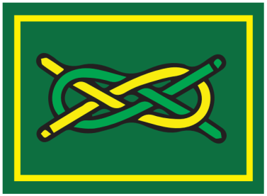

Cub advancement · Award overview
Link Badge
Start at ten and a half or older. Plan the move to Scouts with your Pack Scouter.
Explore the steps ↓
Learn · Practise · Show
Your award at a glance
Our original award overview helps you plan. It is not the complete SSA assessment checklist. Confirm every task, choice and current requirement with your leader before assessment.
Meet your future Patrol
Attend three formal Troop meetings OR two formal meetings and one other Patrol or Troop activity. Play a team game with your future Patrol.
Learn with your Patrol Leader
Cover Scout greetings and their background, motto and slogan, Troop customs and ceremonies, three specified knots, and fire safety.
Talk with the Troop Scouter
Learn and discuss Promise and Law, keep a week of daily examples, and cover Baden-Powell, the World Scout badge, children’s rights, saying no and Going Up. Both Pack and Troop help you prepare.
The complete standard
Check the detail
with your leader.
Source checked on 21 October 2026: SCOUTS South Africa Wiki, Link Badge, revision 18462. Requirements and course conditions can change; historical or incomplete references are flagged in the guide.
Official requirements and badge designs belong to SCOUTS South Africa. This First Factreton guide is an independent introduction; the current full official standard governs assessment.